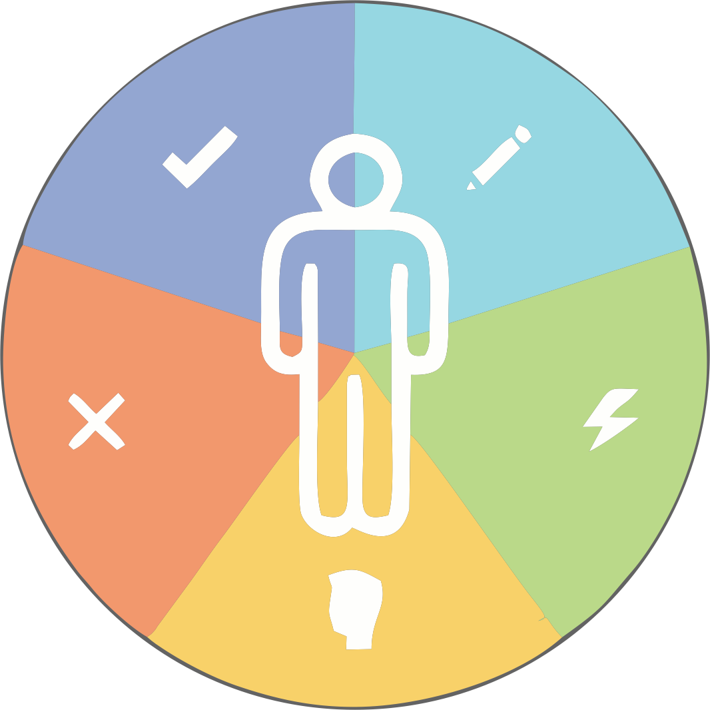

Usabilidade é o método que visa facilitar a utilização de uma interface pelo usuário sem perder a interação de suas funcionalidades com o sistema. Refere-se ao grau no qual o usuário consegue realizar uma tarefa. É tornar “algo” utilizável e funcional, mais especificamente, refere-se à rapidez com que os usuários podem aprender a usar alguma coisa e sua eficiência ao utilizá-la, sua facilidade de aprendizado.
Usuário precisa entrar no site com a certeza de que ali ele achará o que procura sem dificuldades, caso contrário em alguns segundos ele irá para outro site.
Um exemplo da falta de usabilidade é quando entramos em um site e não conseguimos achar o que queremos, seja por falta de informação ou pelo excesso delas, pela má interpretação por causa da linguagem usada, por um botão que não reage como o esperado.

O site precisa conhecer o perfil dos seus usuários, conhecer as necessidades do navegador. Chamamos isso de UX (User Experience) significa focar o projeto no usuário e saber conciliar sua satisfação com os objetivos do produto,transmitindo a eles tranquilidade e confiança.
Um site com boa usabilidade com certeza terá mais usuários, mais vendas, mais visitas, mais objetivos concluídos.
A usabilidade de um site ou software nada mais é do que implementação de recursos focando o usuário final.

Por que é importante existir usabilidade na web?

Se você deseja que o usuário realize algo quando visitar seu site, você deve com certeza se preocupar com a usabilidade. Pois atualmente, as pessoas esperam muito dos web sites e cada vez menos aceitam um projeto ruim. Ou seja, a má utilização da usabilidade resultará em clientes e usuários insatisfeitos e perdas de negócios.
Há a princípio seis regras básicas que devem ser seguidas, estas regras colaboram para a facilidade de aprendizado, pois o usuário consegue explorar rapidamente o sistema e realizar suas tarefas.
Clareza na arquitetura da informação: É essencial que o usuário consiga distinguir o que é prioritário e o que é secundário no site - para isso deve-se ter um bom arranjo da informação, pois os usuários podem ter dificuldades em encontrar o que procuram, e, portanto devem ser ajudados. Deve-se fornecer um senso de como a informação está estruturada e localizada. Um bom exemplo é o mapa do site:

Foco nos usuários: É o "sair do caminho", afim de que o usuário possa fazer o que quer da maneira mais rápida possível.

Facilidade de navegação: O usuário deveria conseguir acessar a informação desejada no máximo em três cliques.

Simplicidade: Quem navega quer encontrar o mais rapidamente possível o objetivo da busca. Deve ser evitado qualquer exagero, dando ao usuário paz e tranquilidade para que possa analisar a informação.

Manter a consistência: Quando as coisas acontecem sempre do mesmo jeito, os usuários não precisam se preocupar a respeito do que irá acontecer. Um web site deve ser gerenciado como um projeto único de interface com o usuário.

Tempo suportável: O tempo de cargas das paginas deve ser curto - 10 segundos é o máximo de tempo antes que as pessoas percam o interesse. (na web os usuários já tem uma baixa expectativa limite.

Seguidas estas regras deve-se, antes de colocar seu site no ar, realizar sucessivos ciclos de análise, concepção e testes, com o objetivo de avaliar a qualidade das interações e levar em conta os resultados destas para a construção de novas versões das interfaces.
Não podemos confundir Usabilidade com Acessibilidade. Ambas agregam qualidade ao conteúdo digital e a diferença entre as duas é que, a Usabilidade tem como objetivo satisfazer um público específico e a Acessibilidade é a base para que esse público chegue até lá.


Aqui vão algumas dicas para melhorar a usabilidade do seu site:
• Usar uma linguagem simples e clara
• Títulos limpos para os links
• Fácil Navegação
• Estrutura do site fácil de ser entendida
• Conteúdo Objetivo
• Prestar atenção nas cores usadas, pois também influenciam
• Páginas específicas para assuntos específicos (nada muito generalizado)
• Contato em destaque
REFERÊNCIAS BIBLIOGRÁFICAS: NIELSEN, Jakob. LORANGER, Hoa. Projetando Websites. Traduzido por Edson Furmankiewicz & Carlos Schafranski. Rio de Janeiro: Campus, 2006. Tradução de: Prioritizing web usability. Leia mais em: Usabilidade na web http://www.devmedia.com.br/usabilidade-na-web/24737#ixzz3noILk9ws